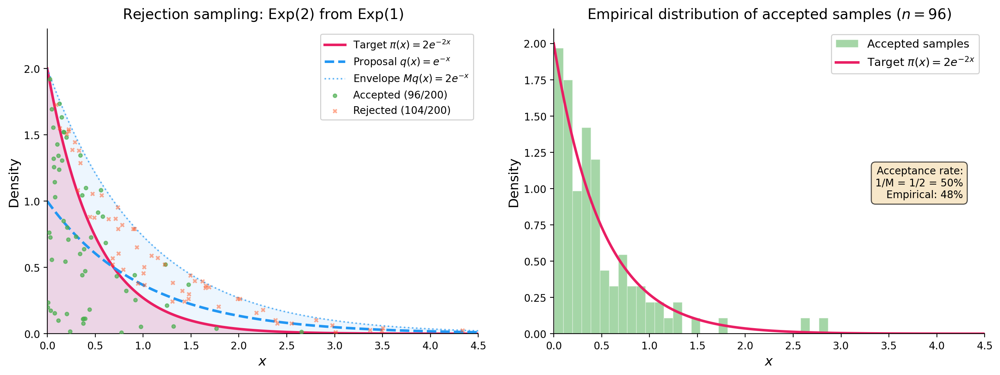

Regenerative Rejection Sampling
This post is my way of making sense of Tiziano Bozzi’s thesis (Bozzi 2026) on regenerative rejection sampling (RRS) and its connection with our paper (Deligiannidis et al. 2025) on importance sampling and the independent Metropolis–Hastings algorithm. The idea is elegant: take the classical rejection sampler, remove the need for a bound on the weights, and get an estimator whose bias decays as \(O(1/N^2)\) instead of the usual \(O(1/N)\). Below I try to lay this out as clearly as I can, with all the renewal theory details that make it work.
Setting and notation
Let \((\mathcal{X}, \mathcal{B}(\mathcal{X}))\) be a measurable space, say \(\mathbb{R}^d\) with its Borel \(\sigma\)-algebra. We want to estimate integrals of the form \[ \pi(f) := \int_\mathcal{X} f(x) \, \pi(x) \, dx \] for a target distribution \(\pi\) and a test function \(f : \mathcal{X} \to \mathbb{R}\). We assume \(\pi\) is known only up to a normalising constant: we can evaluate \(\pi(x)\) pointwise, but \(Z := \int \pi(x) \, dx\) is unknown.
Fix a proposal \(q\) satisfying \(\mathrm{supp}(\pi) \subseteq \mathrm{supp}(q)\). The importance weight function is \[ \omega : \mathcal{X} \to [0,\infty), \qquad \omega(x) := \frac{\pi(x)}{q(x)}. \] We write \(\omega_n := \omega(x_n)\) whenever \(x_n\) is a draw from \(q\). Following (Deligiannidis et al. 2025), we use the shorthand \(q(h) := \mathbb{E}_q[h(X)] = \int h(x) \, q(x) \, dx\) for the expectation of any measurable \(h\) under the proposal. In particular \(q(\omega) = Z\), and the target integral satisfies \(\pi(f) = q(\omega f) / q(\omega)\).
Standing normalisation. We assume throughout \(q(\omega) = 1\), i.e. \(Z = 1\) and both \(\pi\) and \(q\) are probability densities. This is without loss of generality; in the unnormalised case all results hold with \(\mu := q(\omega)\) replacing \(1\). Under this convention: \[ \pi(f) = q(\omega f), \qquad q(\omega) = 1. \]
The weight distribution. The pushforward of \(q\) under \(x \mapsto \omega(x)\) is a probability distribution \(F_\omega\) on \([0, \infty)\): \[ F_\omega(y) := q(\omega(X) \leq y) = \int_\mathcal{X} \mathbb{1}[\omega(x) \leq y] \, q(x) \, dx, \qquad y \geq 0. \] Under our normalisation, \(F_\omega\) has mean \(\mu = q(\omega) = 1\). It turns out to be the interarrival distribution of the renewal process underlying RRS, and its tail properties (finite moments, spread-outness, exponential moments) govern everything: convergence rate, bias order, and the validity of debiasing.
Moment notation. We write \(\mu_k := q(\omega^k) = \mathbb{E}_q[\omega(X)^k]\) for the \(k\)-th moment of \(F_\omega\) under \(q\), so \(\mu_1 = 1\), \(\mu_2 = q(\omega^2)\), \(\mu_3 = q(\omega^3)\), etc.
Classical rejection sampling and why it fails
Rejection sampling (von Neumann, 1951) is the canonical algorithm for exact simulation from \(\pi\). I recall it here both for completeness and to set up the contrast with RRS.
Fix a known constant \(M \geq \|\omega\|_\infty := \sup_{x \in \mathcal{X}} \omega(x)\). Repeat the following independently until success: draw \(x \sim q\) and \(u \sim \mathrm{Unif}(0,1)\) independently, accept \(x\) if \(u \leq \omega(x)/M\), reject and restart otherwise. Return the first accepted \(x\).
The returned sample has distribution exactly \(\pi\). The proof is a direct calculation: for any \(A \in \mathcal{B}(\mathcal{X})\), \[ P(x \in A \mid \text{accept}) = \frac{\int_A \frac{\omega(x)}{M} q(x) \, dx}{q(\omega)/M} = \frac{q(\omega \mathbb{1}_A)}{q(\omega)} = \pi(A), \] using \(q(\omega) = 1\) in the last step. The acceptance probability is \(P(\text{accept}) = q(\omega)/M = 1/M\), so the expected number of trials is \(M\). For the algorithm to be efficient, \(M\) must be close to \(1\).
To make this concrete, here is a simple example: sampling from an \(\mathrm{Exp}(2)\) target using an \(\mathrm{Exp}(1)\) proposal. The weight function is \(\omega(x) = 2e^{-2x}/e^{-x} = 2e^{-x}\), which achieves its supremum \(M = 2\) at \(x = 0\). The acceptance rate is \(1/M = 50\%\), meaning half the proposals are wasted.

This works because \(M = 2\) is known and finite. But the requirement \(M = \|\omega\|_\infty < \infty\) (known) is genuinely restrictive. There are three failure modes:
- Non-existence. When \(\pi\) has heavier tails than \(q\), for instance \(\pi\) Student-\(t\) and \(q\) Gaussian, then \(\|\omega\|_\infty = \infty\) and no finite \(M\) exists.
- Analytical intractability. Even when finite, computing \(\|\omega\|_\infty\) requires solving a global maximisation of \(\pi(x)/q(x)\), which is often impossible in high dimensions.
- Inefficiency. Even when \(M\) is known and finite, if \(M \gg 1\) the acceptance rate \(1/M\) is tiny and most proposals are wasted.
The IMH alternative and its limitation. The Independent Metropolis–Hastings algorithm (Tierney 1994; Mengersen and Tweedie 1996), studied in depth in (Deligiannidis et al. 2025), avoids the need for \(M\) by using the acceptance probability \(\alpha(x, x') = \min(1, \omega(x')/\omega(x))\). This always defines a valid Markov chain with stationary distribution \(\pi\). However, as established rigorously in Mengersen and Tweedie (1996) and recalled in (Deligiannidis et al. 2025): IMH converges geometrically in total variation if and only if \(\|\omega\|_\infty \leq M < \infty\). When the weights are bounded, we actually know the exact convergence rate: Wang (2022) shows that IMH is geometrically ergodic with rate \(1 - 1/\omega^\ast\) where \(\omega^\ast = \|\omega\|_\infty\), and this rate is sharp. When \(\|\omega\|_\infty = \infty\), IMH can still converge but only sub-geometrically. This is precisely the regime where RRS offers a genuine improvement.
Self-normalised importance sampling and its \(O(1/N)\) bias
So rejection sampling gives exact samples but requires a finite, known bound \(M\). The next natural move is to drop the exactness requirement and use the weights \(\omega(x) = \pi(x)/q(x)\) directly, without any acceptance step. This leads to importance sampling, and in the self-normalised case, to an estimator that works for any proposal \(q\) with \(\mathrm{supp}(\pi) \subseteq \mathrm{supp}(q)\), no bounded weights required. The catch is bias. RRS can be understood as a renewal-theoretic refinement of SNIS that eliminates the leading bias term, and this connection is at the heart of (Deligiannidis et al. 2025), who study IS and IMH as two complementary strategies for correcting the mismatch between \(q\) and \(\pi\).
Draw \(x_1, \ldots, x_N \overset{\text{iid}}{\sim} q\), set \(\omega_n = \omega(x_n)\), and define \(\tilde{Z}_N := \sum_{k=1}^N \omega_k\). The self-normalised importance sampling (SNIS) estimator of \(\pi(f)\) is: \[ \hat{F}_N := \frac{\sum_{k=1}^N \omega_k f(x_k)}{\tilde{Z}_N}. \] By the law of large numbers, \(N^{-1}\tilde{Z}_N \to q(\omega) = 1\) and \(N^{-1}\sum \omega_k f(x_k) \to q(\omega f) = \pi(f)\) almost surely, so \(\hat{F}_N \to \pi(f)\) a.s. as \(N \to \infty\). But since \(\mathbb{E}[A/B] \neq \mathbb{E}[A]/\mathbb{E}[B]\) in general, the estimator is biased: \[ \mathbb{E}[\hat{F}_N] = \pi(f) + O(1/N). \] The \(O(1/N)\) term arises from the ratio structure. More precisely, under the conditions \(q(|f - \pi(f)| \omega) < \infty\), \(q(|f - \pi(f)| \cdot \omega^3) < \infty\), and \(q(\omega^{-\eta}) < \infty\) for some \(\eta > 0\), Theorem 2.1 of (Deligiannidis et al. 2025) gives the exact leading coefficient: \[ \lim_{N \to \infty} N \times \mathbb{E}_{\bar{q}}[\hat{F}(\mathbf{x}) - \pi(f)] = -\int (f(x) - \pi(f)) \, \omega^2(x) \, q(dx). \] So the bias is \(-q((f - \pi(f))\omega^2)/N + o(1/N)\): it is of order \(1/N\), with a coefficient that depends on the covariance between \(f\) and \(\omega\) under the size-biased distribution.
PIMH and unbiased estimation. One key contribution of (Deligiannidis et al. 2025) is to show how the SNIS bias can be removed entirely via the particle independent Metropolis–Hastings (PIMH) algorithm (Andrieu, Doucet, and Holenstein 2010). The idea is to view SNIS through the lens of IMH on an extended space. Given \(N\) proposals \(\mathbf{x} = (x_1, \ldots, x_N) \overset{\text{iid}}{\sim} q\), define the extended target \(\bar{\pi}(\mathbf{x}) = \hat{Z}(\mathbf{x}) \prod_{n=1}^N q(x_n)\) and the extended proposal \(\bar{q}(\mathbf{x}) = \prod_{n=1}^N q(x_n)\), where \(\hat{Z}(\mathbf{x}) = N^{-1}\sum_{n=1}^N \omega(x_n)\). Since \(\mathbb{E}_{\bar{q}}[\hat{Z}(\mathbf{x})] = q(\omega) = 1\), the distribution \(\bar{\pi}\) is properly normalised, and the weight on the extended space is simply \(\bar{\omega}(\mathbf{x}) = \bar{\pi}(\mathbf{x})/\bar{q}(\mathbf{x}) = \hat{Z}(\mathbf{x})\). Running IMH with proposal \(\bar{q}\) and target \(\bar{\pi}\) gives the PIMH algorithm, whose acceptance probability is \(\alpha(\mathbf{x}, \mathbf{x}^\star) = \min(1, \hat{Z}(\mathbf{x}^\star)/\hat{Z}(\mathbf{x}))\).
The crucial observation is that the SNIS estimator \(\hat{F}(\mathbf{x}) = \sum_{n=1}^N \omega(x_n) f(x_n) / \sum_{n=1}^N \omega(x_n)\) is unbiased under \(\bar{\pi}\): \[ \mathbb{E}_{\bar{\pi}}[\hat{F}(\mathbf{x})] = \int \hat{F}(\mathbf{x}) \cdot \hat{Z}(\mathbf{x}) \cdot \bar{q}(\mathbf{x}) \, d\mathbf{x} = \int \omega(x_1) f(x_1) q(x_1) \, dx_1 = \pi(f). \] So while \(\hat{F}\) is biased under \(\bar{q}\) (the IS perspective), it is unbiased under \(\bar{\pi}\) (the MCMC perspective). This is what makes lagged coupling of PIMH chains viable for unbiased estimation: since \(\hat{F}\) has expectation \(\pi(f)\) under the stationary distribution \(\bar{\pi}\), the coupled chains of (Deligiannidis et al. 2025) yield an estimator \(\Delta_T^{\mathrm{PIMH}}\) with \(\mathbb{E}[\Delta_T^{\mathrm{PIMH}}] = \pi(f)\) for all \(T \geq 0\). The price is that PIMH requires running coupled Markov chains on the \(N\)-dimensional extended space, which introduces its own computational overhead.
RRS as a renewal-theoretic SNIS. This is where RRS fits in. Rather than debiasing SNIS through coupling on an extended space (the PIMH route from (Deligiannidis et al. 2025)), Bozzi’s approach stays in the original space \(\mathcal{X}\) and instead changes the stopping rule: run SNIS on a random sample size \(N(t)\), determined by a threshold \(t\) on the cumulative weight \(\tilde{Z}_{N(t)}\). This renewal stopping rule reduces the bias from \(O(1/N)\) to \(O(1/N^2)\), exactly one order better than fixed-\(N\) SNIS. The improvement is a structural consequence of the inspection paradox of renewal theory, and it requires nothing beyond the i.i.d. proposals that SNIS already uses.
The RRS algorithm
With the SNIS bias and its remedies in mind, let us now describe the algorithm itself. The construction is simple: draw i.i.d. proposals from \(q\), accumulate their weights, and stop when the sum exceeds a threshold \(t\). The key observation is that this cumulative weight process is a renewal process, and RRS is nothing but its time-\(t\) sample.
Draw once and for all an i.i.d. sequence \(x_1, x_2, x_3, \ldots \overset{\text{iid}}{\sim} q\), with \(\omega_n := \omega(x_n) \overset{\text{iid}}{\sim} F_\omega\). Form the cumulative weight process: \[ \tilde{Z}_n := \sum_{k=1}^n \omega_k, \qquad \tilde{Z}_0 := 0. \] Since \(\omega_n \overset{\text{iid}}{\sim} F_\omega\) with \(q(\omega) = 1\), the sequence \((\tilde{Z}_n)_{n \geq 0}\) is a zero-delayed renewal process with interarrival distribution \(F_\omega\) and mean \(\mu = 1\). Define the associated renewal counting process \[ N(t) := \inf\{n \geq 1 : \tilde{Z}_n > t\}, \qquad t \geq 0. \]
For threshold \(t > 0\), the RRS output is \(Y_t := x_{N(t)}\). The process \(\{Y_t\}_{t \geq 0}\) is piecewise-constant and regenerative: for each \(n \geq 1\), it holds the constant value \(x_n\) on the entire random interval \([\tilde{Z}_{n-1}, \tilde{Z}_n)\). The i.i.d. pairs \((x_n, \omega_n)_{n \geq 1}\) constitute the embedded renewal structure, with \(\omega_n\) playing the dual role of IS weight and cycle length.
The algorithm terminates almost surely as long as \(q(\omega > 0) > 0\), which is guaranteed by our assumptions.
Connection with rejection sampling. Classical rejection sampling draws from \(q\) until a single condition \(u \leq \omega(x)/M\) is met, a hard threshold on one weight. RRS draws from \(q\) until the cumulative weight \(\tilde{Z}_n\) exceeds a deterministic threshold \(t\), a soft boundary on the running sum. Rejection sampling returns an exact sample by construction; RRS returns an approximate sample that becomes more accurate as \(t \to \infty\). The decisive difference is that RRS requires no knowledge of \(M = \|\omega\|_\infty\), not even its finiteness.
Stationary distribution
Before analysing the bias of the estimator, let us establish that the RRS process converges to the right target.
Conditions for convergence:
- (B1) \(q(\omega) = 1\).
- (B2) \(F_\omega\) has finite mean \(\mu = 1\) and is nonlattice.
- (B3) \(F_\omega\) is spread-out: there exists \(m \in \mathbb{N}\) such that \(F_\omega^{*m}\) has a non-trivial absolutely continuous component with respect to Lebesgue measure.
The spread-out condition (B3) is mild. In the RRS context, \(F_\omega\) is the law of \(\omega(X)\) under \(q\). Whenever \(\pi\) and \(q\) are smooth densities on \(\mathbb{R}^d\) and \(\omega\) is continuous and positive on its support, \(F_\omega\) is absolutely continuous, which trivially implies spread-outness with \(m = 1\).
Theorem (Theorem 5.3 of Bozzi (2026)). Under (B1)–(B3), \(\|\mathcal{L}(Y_t) - \pi\|_{\mathrm{TV}} \to 0\) as \(t \to \infty\), and the stationary distribution is exactly \(\pi\).
Proof. The process \(\{Y_t\}_{t \geq 0}\) is regenerative (Definition 3.4 of Bozzi (2026)) with embedded renewal process \(\{\tilde{Z}_n\}\) and i.i.d. cycle lengths \(\omega_n \sim F_\omega\). All conditions of the regenerative process limit theorem (Theorem 3.2 of Bozzi (2026), a consequence of the Key Renewal Theorem) are satisfied: \(F_\omega\) is spread-out with finite mean \(\mu = 1\), and the paths are right-continuous.
By this theorem, the stationary expectation exists and equals: \[ \mathbb{E}_\pi[f(Y)] = \frac{1}{\mu} \, \mathbb{E}_0\!\left[\int_0^{\omega_1} f(Y_s) \, ds\right], \] where \(\mathbb{E}_0\) denotes expectation under the zero-delayed process. Since \(Y_s = x_1\) for all \(s \in [0, \omega_1)\) (the process is constant on the first cycle), the integral simplifies: \[ \mathbb{E}_0\!\left[\int_0^{\omega_1} f(Y_s) \, ds\right] = \mathbb{E}_0[f(x_1) \cdot \omega_1] = q(\omega f), \] using \((x_1, \omega_1) \sim (q, F_\omega)\) under \(\mathbb{P}_0\). With \(\mu = 1\): \[ \mathbb{E}_\pi[f(Y)] = \frac{1}{1} \cdot q(\omega f) = q(\omega f) = \pi(f). \qquad \square \]
Exponential convergence
Convergence to \(\pi\) is established. What about the rate? The answer requires a stronger condition on the tails of \(F_\omega\).
Theorem (Corollary 4.13 of Bozzi (2026)). Under (B1)–(B3), if additionally \(q(e^{\eta \omega}) := \mathbb{E}_q[e^{\eta \omega(X)}] < \infty\) for some \(\eta > 0\), then there exists \(\varepsilon > 0\) such that \(\|\mathcal{L}(Y_t) - \pi\|_{\mathrm{TV}} = O(e^{-\varepsilon t})\).
The proof goes through three layers, following Theorem 4.10 and Lemma 4.11 of Bozzi (2026).
Since \(F_\omega\) is spread-out, Lemma 4.9 of Bozzi (2026) gives a uniform component: there exist \(A > 0\), \(b > 0\), and \(\delta \in (0,1)\) such that \(F_\omega(\cdot) \geq \delta \, \mathrm{Unif}(0,b)(\cdot)\). This means \(F_\omega\) decomposes as a mixture \(F_\omega = \delta \, \mathrm{Unif}(0,b) + (1-\delta) \, H\), where \(H\) is the residual.
Now run two copies of the RRS renewal process on the same probability space: one zero-delayed, one stationary. At successive times \(t_k = t_{k-1} + A\), attempt to couple by drawing \(U_k \overset{\text{iid}}{\sim} \mathrm{Ber}(\delta)\). When \(U_k = 1\), both processes share a common \(\mathrm{Unif}(0,b)\) weight; otherwise they draw independent residuals from \(H\). The meeting index is \(\tau := \inf\{k \geq 1 : U_k = 1\} \sim \mathrm{Geom}(\delta)\), so \(\mathbb{P}(\tau = k) = \delta(1-\delta)^{k-1}\).
The exponential moment condition \(q(e^{\eta \omega}) < \infty\) ensures \(c_1 := \sup_{t \geq 0} q(e^{\eta R_t}) < \infty\) (where \(R_t\) is the forward recurrence time). This is proved via the renewal equation for \(z(t) = q(e^{\eta R_t}; t < \omega_1) \leq e^{-\eta t} q(e^{\eta \omega})\), which is directly Riemann integrable under the exponential moment condition. A Holder inequality argument (Lemma 4.11 of Bozzi (2026)) then gives \(\mathbb{E}[e^{(\eta/p)\tau}] < \infty\) for some \(p > 1\). Setting \(\varepsilon' = \eta/p > 0\), the coupling inequality yields: \[ \|\mathcal{L}(Y_t) - \pi\|_{\mathrm{TV}} \leq \mathbb{P}(T_\tau > t) \leq \mathbb{P}(\tau > t/A) \leq e^{-\varepsilon' t/A} \, \mathbb{E}[e^{\varepsilon' \tau}] = O(e^{-\varepsilon t}). \qquad \square \]
Why this beats IMH. In (Deligiannidis et al. 2025), the convergence rate of IMH is shown to be geometric if and only if \(\|\omega\|_\infty \leq M < \infty\); when the weights are bounded, Wang (2022) gives the sharp rate \(1 - 1/\omega^\ast\) with \(\omega^\ast = \|\omega\|_\infty\). The exponential moment condition \(q(e^{\eta \omega}) < \infty\) required by RRS is strictly weaker: if \(\|\omega\|_\infty \leq M\), then \(q(e^{\eta \omega}) \leq e^{\eta M} < \infty\) for all \(\eta > 0\), so the condition holds trivially. Conversely, it can hold with \(\|\omega\|_\infty = \infty\). For instance, if \(\omega(X) \sim \mathrm{Exp}(1)\) under \(q\), then \(q(e^{\eta \omega}) = 1/(1-\eta) < \infty\) for all \(\eta < 1\), yet \(\|\omega\|_\infty = \infty\). In this regime, IMH does not converge geometrically but RRS does. This is the gap RRS fills: it retains exponential convergence in the unbounded-weight regime where IMH slows down to sub-geometric rates.
The estimator and its \(O(1/N^2)\) bias
The time-average ratio estimator
After running RRS to threshold \(t\), we have \(N(t)\) i.i.d. proposals \(x_1, \ldots, x_{N(t)}\) with weights \(\omega_1, \ldots, \omega_{N(t)}\). The natural estimator of \(\pi(f)\) is the time-average ratio estimator: \[ \hat{F}_t := \frac{\displaystyle\sum_{n=1}^{N(t)} \omega_n f(x_n)}{\tilde{Z}_{N(t)}}. \] Note that \(\tilde{Z}_{N(t)} > t\) by definition, and \(N(t) \approx t\) on average since \(N(t)/t \to 1/\mu = 1\) a.s. by the Renewal LLN. So \(\hat{F}_t\) is essentially SNIS on a random sample size close to \(N \approx t\). It converges to \(\pi(f)\) a.s. by the regenerative ergodic theorem.
The question is purely about the rate at which the bias \(\mathbb{E}[\hat{F}_t] - \pi(f)\) goes to zero. For fixed-\(N\) SNIS, this is \(O(1/N)\). We will show that the renewal stopping rule improves this to \(O(1/N^2)\), exactly one order better. The improvement is a structural consequence of the inspection paradox of renewal theory.
Assumptions
We need the following conditions:
- (A1) \(q(\omega) = 1\).
- (A2) \(F_\omega\) has an absolutely continuous component (spread-out condition).
- (A3) \(\mu_2 := q(\omega^2) < \infty\) and \(\mu_3 := q(\omega^3) < \infty\).
- (A4) \(\|f\|_\infty \leq K < \infty\).
Assumption (A3) is the key moment condition. The requirement \(\mu_3 < \infty\), the third moment of the weight distribution, is needed specifically for Lorden’s inequality at order \(k = 2\). If only \(\mu_2 < \infty\), the non-asymptotic bound degrades; \(\mu_3 < \infty\) is the minimal condition for \(O(1/N^2)\).
Main result
Theorem (Theorem 6.1 of Bozzi (2026); Meketon and Heidelberger (1982)). Under (A1)–(A4): \[ \mathbb{E}[\hat{F}_t] = \pi(f) + \frac{b_2}{t^2} + \frac{b_3}{t^3} + \cdots \] where \(b_2 := \lim_{t \to \infty} \mathbb{E}[R_t S_{N(t)}] \in \mathbb{R}\). Since \(N(t) \approx t\), this gives \(O(1/N^2)\) bias. The coefficient of \(1/t\) is exactly zero for all \(t > 0\).
Proof
I’ll go through the proof in detail, since the interplay between Wald’s identities, Lorden’s inequality, and the Key Renewal Theorem is really what makes the whole thing tick.
The fundamental decomposition. Define the centred cycle reward for each \(n \geq 1\): \[ Z_n := \omega_n(f(x_n) - \pi(f)) = \omega_n f(x_n) - \pi(f) \, \omega_n. \] We verify immediately: \(q(Z_1) = q(\omega f) - \pi(f) \, q(\omega) = \pi(f) - \pi(f) \cdot 1 = 0\). So the \(Z_n\) are centred. Under (A3)–(A4): \(q(Z_1^2) = q(\omega^2 (f - \pi(f))^2) \leq 4K^2 q(\omega^2) = 4K^2 \mu_2 < \infty\).
The overshoot at time \(t\) is \(R_t := \tilde{Z}_{N(t)} - t \geq 0\), the amount by which the cumulative weight exceeds the threshold at the stopping time, equivalently the forward recurrence time of the renewal process \((\tilde{Z}_n)\). Writing \(S_{N(t)} := \sum_{n=1}^{N(t)} Z_n\) and using \(\tilde{Z}_{N(t)} = t + R_t\): \[ \hat{F}_t - \pi(f) = \frac{\sum_{n=1}^{N(t)} \omega_n f(x_n) - \pi(f) \tilde{Z}_{N(t)}}{\tilde{Z}_{N(t)}} = \frac{S_{N(t)}}{t + R_t} = \frac{S_{N(t)}/t}{1 + R_t/t}. \] Setting \(\bar{Z}_t := S_{N(t)}/t\), the fundamental identity is: \[ \hat{F}_t - \pi(f) = \frac{\bar{Z}_t}{1 + R_t/t}. \tag{$\ast$} \]
Wald kills the \(O(1/N)\) term. Take expectations in (\(\ast\)) and write: \[ \mathbb{E}[\hat{F}_t - \pi(f)] = \mathbb{E}[\bar{Z}_t] + \mathbb{E}\!\left[\bar{Z}_t \left(\frac{1}{1 + R_t/t} - 1\right)\right]. \] I claim \(\mathbb{E}[\bar{Z}_t] = 0\) for all \(t > 0\). This follows from Wald’s first identity: if \((\xi_n)_{n \geq 1}\) are i.i.d. with \(\mathbb{E}[|\xi_1|] < \infty\), and \(\nu\) is a stopping time with \(\mathbb{E}[\nu] < \infty\), then \(\mathbb{E}[\sum_{n=1}^\nu \xi_n] = \mathbb{E}[\nu] \cdot \mathbb{E}[\xi_1]\).
Apply this with \(\xi_n = Z_n\) and \(\nu = N(t)\). Let me check the hypotheses: \(\mathbb{E}[|Z_1|] \leq 2K \, q(\omega) = 2K < \infty\) by (A1) and (A4); \(N(t)\) is a stopping time since \(\{N(t) \leq n\} = \{\tilde{Z}_n > t\} \in \mathcal{F}_n\); and \(\mathbb{E}[N(t)] \leq (t + \mu_2)/\mu = t + \mu_2 < \infty\) by the Elementary Renewal Theorem under (A3). Therefore: \[ \mathbb{E}[S_{N(t)}] = \mathbb{E}[N(t)] \cdot q(Z_1) = 0, \qquad \text{so} \quad \mathbb{E}[\bar{Z}_t] = 0. \]
Since \(\frac{1}{1 + R_t/t} - 1 = \frac{-R_t/t}{1 + R_t/t}\), we conclude: \[ \mathbb{E}[\hat{F}_t - \pi(f)] = -\frac{1}{t} \, \mathbb{E}\!\left[\frac{R_t \, \bar{Z}_t}{1 + R_t/t}\right]. \tag{$\ast\ast$} \] This is the key structural insight. The \(O(1/N)\) bias would require \(\mathbb{E}[\bar{Z}_t] \neq 0\), but Wald forces it to zero, not asymptotically, but for every \(t > 0\). The bias is therefore at most \(O(1/t)\) times \(\mathbb{E}[R_t |\bar{Z}_t|]\). We now show this product is \(O(1/t)\), giving an overall \(O(1/t^2) = O(1/N^2)\) bias.
Controlling \(\mathbb{E}[R_t^2]\) via Lorden’s inequality. Lorden’s inequality (Lorden 1970) gives uniform bounds on the moments of the overshoot \(R_t\). For a renewal process with interarrival distribution \(F_\omega\), mean \(\mu\), and finite \((k+1)\)-th moment \(\mu_{k+1} < \infty\): \[ \sup_{t \geq 0} \, \mathbb{E}[R_t^k] \leq \frac{\mu_{k+1}}{(k+1)\mu}. \]
Let me explain why this holds. The function \(v_k(t) := \mathbb{E}[R_t^k]\) satisfies the renewal equation \[ v_k(t) = z_k(t) + \int_0^t v_k(t - u) \, F_\omega(du), \qquad z_k(t) := \mathbb{E}[(\omega_1 - t)_+^k]. \] This comes from conditioning on the first cycle \(\omega_1\): if \(\omega_1 > t\) then \(R_t = \omega_1 - t\), contributing \(\mathbb{E}[(\omega_1 - t)^k; \omega_1 > t] = z_k(t)\); if \(\omega_1 \leq t\) the renewal restarts. By Theorem 2.5(ii) of Bozzi (2026), the unique bounded solution is \(v_k = U * z_k\) where \(U = \sum_{n=0}^\infty F_\omega^{*n}\) is the renewal measure. Since \(U\) has density bounded by \(1/\mu\) (by the Renewal Theorem), \(\|v_k\|_\infty \leq \|z_k\|_\infty / \mu\). Now bound \(\|z_k\|_\infty\) using the layer-cake representation: \[ z_k(t) = \mathbb{E}[(\omega_1 - t)_+^k] \leq \int_0^\infty k s^{k-1} \mathbb{P}(\omega_1 > s) \, ds = \frac{\mu_{k+1}}{k+1}. \] Therefore \(\sup_t v_k(t) \leq \mu_{k+1}/((k+1)\mu)\).
Under (A3) with \(\mu = 1\) and \(k = 2\): \[ \sup_{t \geq 0} \, \mathbb{E}[R_t^2] \leq \frac{\mu_3}{3} < \infty. \]
This is why we need \(\mu_3\) and not just \(\mu_2\). Lorden’s inequality for \(\mathbb{E}[R_t^2]\) requires the \((2+1) = 3\)rd moment of \(F_\omega\). Under only \(\mu_2 < \infty\), Lorden gives \(\sup_t \mathbb{E}[R_t] \leq \mu_2/2\), but says nothing about \(\mathbb{E}[R_t^2]\). This is why (A3) imposes \(\mu_3 < \infty\).
Controlling \(\mathbb{E}[\bar{Z}_t^2]\) via Wald’s second moment identity. For i.i.d. \((Z_n)\) with \(q(Z_1) = 0\), \(q(Z_1^2) < \infty\), and stopping time \(\nu\) with \(\mathbb{E}[\nu] < \infty\), Wald’s second moment identity gives \(\mathbb{E}[S_\nu^2] = \mathbb{E}[\nu] \cdot q(Z_1^2)\).
The proof is a martingale argument: the process \(M_n := S_n^2 - n \, q(Z_1^2)\) is a martingale since \(q(Z_1) = 0\), and optional stopping at \(\nu = N(t)\) gives \(\mathbb{E}[M_{N(t)}] = M_0 = 0\), i.e. \(\mathbb{E}[S_{N(t)}^2] = \mathbb{E}[N(t)] \, q(Z_1^2)\).
Applying this with \(\nu = N(t)\): \[ \mathbb{E}[\bar{Z}_t^2] = \frac{\mathbb{E}[S_{N(t)}^2]}{t^2} = \frac{\mathbb{E}[N(t)] \cdot q(Z_1^2)}{t^2}. \] Using \(\mathbb{E}[N(t)] \leq t + \mu_2\) and \(q(Z_1^2) \leq 4K^2 \mu_2\): \[ \mathbb{E}[\bar{Z}_t^2] \leq \frac{4K^2 \mu_2(t + \mu_2)}{t^2}. \]
The non-asymptotic bound. Since \(1/(1 + R_t/t) \leq 1\), from (\(\ast\ast\)): \[ |\mathbb{E}[\hat{F}_t - \pi(f)]| \leq \frac{1}{t} \, \mathbb{E}[R_t |\bar{Z}_t|] \leq \frac{1}{t} \sqrt{\mathbb{E}[R_t^2]} \sqrt{\mathbb{E}[\bar{Z}_t^2]}, \] by Cauchy–Schwarz. Substituting the Lorden and Wald bounds: \[ |\mathbb{E}[\hat{F}_t] - \pi(f)| \leq \frac{1}{t^{3/2}} \sqrt{\frac{4K^2 \mu_2 \mu_3}{3} \left(1 + \frac{\mu_2}{t}\right)}. \] This holds for all \(t > 0\), no asymptotic approximation needed. It decays as \(O(t^{-3/2})\), and every component (\(\mu_2\), \(\mu_3\), \(K\)) is estimable from the simulation output. The bound is conservative: the true rate is \(O(1/t^2)\), not \(O(1/t^{3/2})\). The gap comes from the Cauchy–Schwarz step and the crude bound \(1/(1 + R_t/t) \leq 1\).
Sharpening to \(O(1/N^2)\) via the Key Renewal Theorem. To get the sharp result, we use a finite Taylor expansion. For \(u = R_t/t \geq 0\) and \(p \geq 1\): \[ \frac{1}{1+u} = \sum_{k=0}^p (-1)^k u^k + (-1)^{p+1} \frac{u^{p+1}}{1+u}. \] Taking \(p = 1\) and multiplying both sides by \(\bar{Z}_t\), then taking expectations: \[ \mathbb{E}[\hat{F}_t - \pi(f)] = \underbrace{\mathbb{E}[\bar{Z}_t]}_{= 0} - \frac{1}{t^2} \underbrace{\mathbb{E}[R_t \, S_{N(t)}]}_{=: \, g(t)} + \mathrm{Rem}_1(t), \] where \(S_{N(t)} = t \bar{Z}_t\) and the remainder satisfies \(|\mathrm{Rem}_1(t)| \leq \frac{1}{t^2} \mathbb{E}[R_t^2 |\bar{Z}_t|]\), which by Cauchy–Schwarz and Lorden is \(O(t^{-5/2})\).
The function \(g(t) := \mathbb{E}[R_t S_{N(t)}]\) satisfies a renewal equation. Conditioning on the first cycle \(\omega_1\): \[ g(t) = z_g(t) + \int_0^t g(t-u) \, F_\omega(du), \] with driving function \(z_g(t) := \mathbb{E}[R_t S_{N(t)}; \omega_1 > t]\). Under (A1)–(A4), \(z_g\) is bounded: \(|z_g(t)| \leq 2K \, \mathbb{E}[\omega_1^2 \mathbb{1}(\omega_1 > t)] \to 0\) as \(t \to \infty\) (since \(\mu_2 < \infty\)), and \(z_g\) is directly Riemann integrable on \([0,\infty)\) under \(\mu_3 < \infty\) (by Proposition 2.13 of Bozzi (2026)). By the Key Renewal Theorem (Theorem 2.17 of Bozzi (2026), the Feller-Blackwell theorem in the spread-out case): \[ g(t) \xrightarrow{t \to \infty} \frac{1}{\mu} \int_0^\infty z_g(s) \, ds = \int_0^\infty z_g(s) \, ds =: b_2 \in \mathbb{R}. \] Assembling everything: \[ \mathbb{E}[\hat{F}_t] = \pi(f) + \frac{b_2}{t^2} + O(1/t^3). \] More generally, continuing to higher orders in the Taylor expansion under \(\mu_{p+2} < \infty\), one obtains the full asymptotic expansion: \[ \mathbb{E}[\hat{F}_t] = \pi(f) + \frac{b_2}{t^2} + \frac{b_3}{t^3} + \cdots + \frac{b_p}{t^p} + O(1/t^{p+1}). \qquad \square \]
Why \(O(1/N)\) is structurally absent. To repeat the punchline: the \(k = 0\) term in the Taylor expansion contributes \(\mathbb{E}[\bar{Z}_t] = t^{-1} \mathbb{E}[S_{N(t)}] = 0\) by Wald, for every \(t > 0\). Fixed-\(N\) SNIS has no such cancellation, since stopping at a deterministic \(N\) breaks the Wald identity. The renewal stopping rule is what restores it and gives RRS its \(O(1/N^2)\) bias.
The inspection paradox. The bias improvement can also be understood through the inspection paradox of renewal theory (Remark 2.11 of Bozzi (2026)). At time \(t\), the “current cycle”, the one being sampled when the threshold is hit, is stochastically larger than a typical cycle. The overshoot \(R_t = \tilde{Z}_{N(t)} - t\) is the extra weight above \(t\) in the final cycle: by length-biased sampling, this cycle is preferentially the long ones. Including this over-represented final cycle in the denominator \(\tilde{Z}_{N(t)} = t + R_t\) inflates the denominator above \(t\), creating a negative correction to the ratio that precisely cancels the \(O(1/N)\) term. This is the renewal-theoretic mechanism that gives RRS its bias advantage over fixed-\(N\) SNIS.
To summarise the picture: rejection sampling gives exact draws but needs bounded weights; SNIS works with any weights but carries \(O(1/N)\) bias; PIMH ((Deligiannidis et al. 2025)) removes the bias entirely through coupling on an extended space; and RRS ((Bozzi 2026)) stays in the original space and reduces the bias to \(O(1/N^2)\) by replacing the fixed sample size with a renewal stopping rule. The \(O(1/N)\) term vanishes because Wald’s identity forces \(\mathbb{E}[S_{N(t)}] = 0\), and the residual bias is controlled by the interplay between the overshoot \(R_t\) (via Lorden) and the stopped sum variance (via Wald’s second identity). All of this sits on top of the renewal structure of the cumulative weight process, which is both the source of the bias improvement and the reason it converges exponentially under lighter tail conditions than IMH requires.